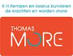

campus De Nayer
campus De Nayer
Thomas More is the largest university of applied sciences in Flanders, offering more than 30 Dutch-taught and a range of English-taught bachelor degree programmes in the province of Antwerp. Next to that, Thomas More offers exchange programmes in English, for students from partner universities.
Thomasmore offers a range of inspiring English-taught international degree programmes giving (foreign) students with high ambitions access to our top-quality education.
In addition to full (three-year) programmes, we organise abridged (one-year) courses to obtain a second degree.
Furthermore, the school is active in applied scientific research and consultancy.

Thomasmore is a member of the K.U.Leuven Association.